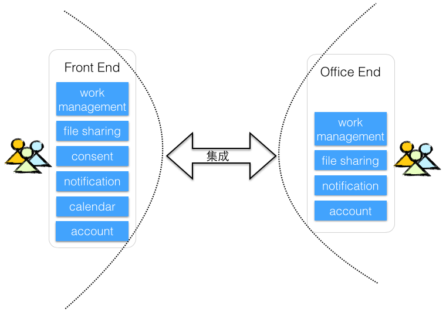

我们的一个项目，采用了简单分割的分布式架构，Front End面向客户的用户，而Office End则面向业务人员和系统管理者。随着需求增多，功能越来越复杂，系统各个模块的边界开始变得越模糊，形成了一个逻辑散乱的庞大代码库。重复代码与重复数据俯拾皆是，而Front End与Office End之间的集成也非常复杂。负责开发这两个模块的团队虽然属于同一个项目，但团队之间存在极大的技术和业务壁垒，团队成员对整个系统缺乏整体认识，知识没有能够在团队之间传递起来。

图：分为Front End与Office End的分布式架构
新的业务服务如约而至，项目面临抉择：究竟是得过且过，然后看着代码库逐渐庞大，复杂而僵化以至于难以维护；抑或风险驱动，通过演进改进系统架构，同时进行新需求开发？
智者，自然会选择后者，毋庸置疑。
观察这个架构，它是Monolithic System的典型体现，体现为系统复杂，没有形成松散耦合的模块结构，没有清晰的层次和边界划分，进而导致复杂的集成。因而，我们选择以划定清晰边界为系统演进过程的起点。考虑重用和统一接口的因素，我们以REST服务为重用粒度。
识别服务时，可以运用Bounded Context来确定服务的边界。在《领域驱动设计》中，Eric Evans将Bounded Context定义为[1]：
应该显式地定义某个模型所应用的上下文。还应该在团队组织、应用中特定部分的使用以及像代码库和数据库样式等物理表现显式地设定边界。要保持边界中模型的严格一致，不受外界问题的影响与干扰。
Bounded Context之间应尽可能地保持解耦，即使互相之间存在依赖关系，也尽可能依赖暴露在边界外的接口。这恰好也符合REST服务的要求。由于Bounded Context体现的是领域概念，因而我们也可以将其定义为领域服务。
当我们把之前相对混乱和模糊的功能模块全部演进为REST服务后，对外公开了统一的服务接口，UI的展现逻辑就与领域逻辑完全分离了。UI Applications是一个薄薄的展现层，以RESTful的方式调用服务，也使得服务在保证接口不变的前提下能够单独演化。每个服务都是独立的，甚至可以采用微服务的风格，将每个服务部署为Standalone的形式。这就使得服务不仅保证了逻辑边界的隔离，甚至还隔离了物理边界，因而可以针对服务建立特性团队（Feature Team）。服务的重用性和可扩展性也有了更好的保障，服务与UI之间的集成变得更简单，整个架构更加清晰了。
图：基于领域服务的架构
参考文献 [1]Eric Evans，领域驱动设计